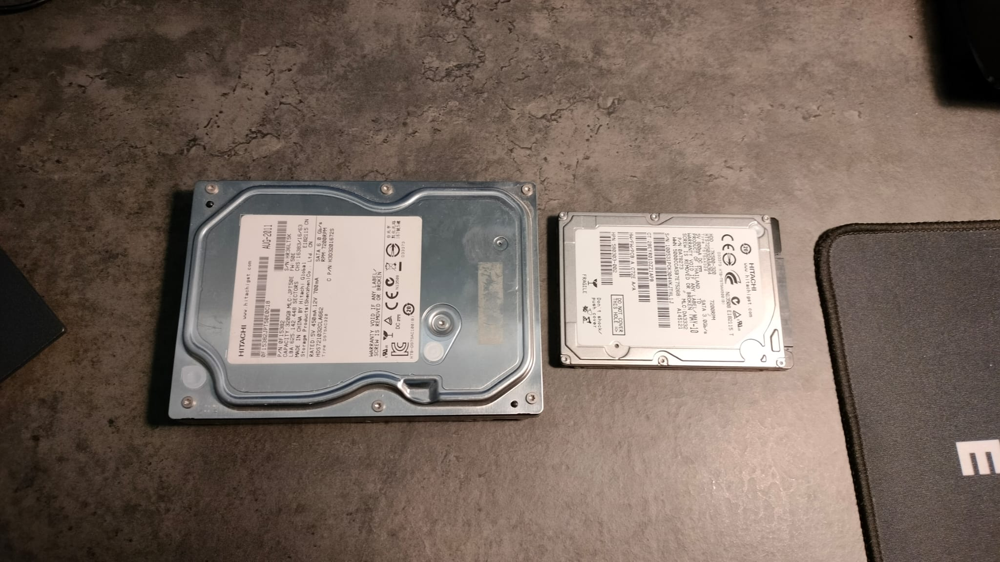
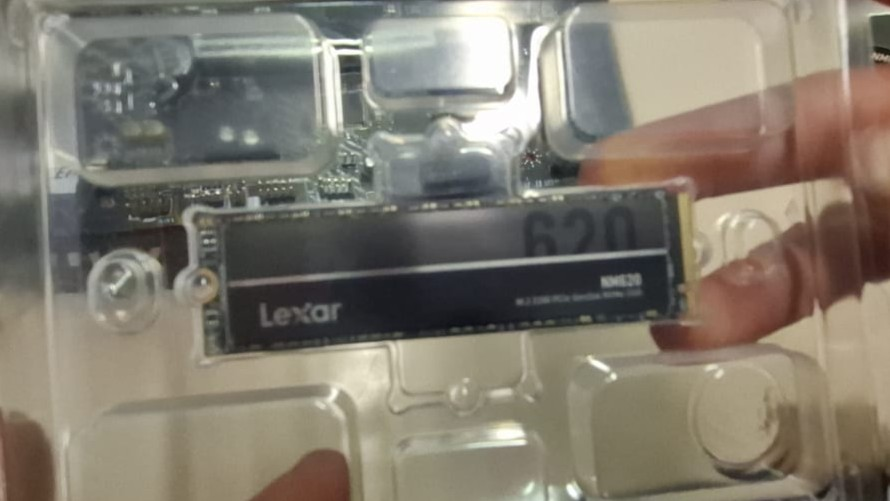

Disclaimer
The book originally explains only hard disk drives (HDDs), but since that type of storage is becoming outdated, we are going to expand on SSDs (Solid State Drives), the current standard for secondary storage.
SSDs were only briefly mentioned as an alternative for hard disks in the book, as they were still in development at the time of its writing. However, they have now become the preferred choice for many applications.
HDD - Hard Disk Drive

The two types of HDDs (2.5 and 3.5 inches)
The hard disk drive (HDD) was the most common type of magnetic storage for several decades.
It was used as the primary internal storage device in computers, located inside the chassis. Some models could be external or even removable.
All types of hard disks consist of the following components:
- Platters: One or more rigid, fast-rotating discs coated with magnetic material.
- Read/Write Heads: Tiny electromagnetic iron cones wrapped in a wire, responsible for writing and reading data on the surface.
- Actuator Arm: Moves the read/write heads across the platters to access different data locations.
- Spindle Motor: Rotates the platters at high speeds, typically between 5,400 and 15,000 RPM.
Working Mechanism of HDDs:
- As the platters spin, the write head magnetizes regions on the disk surface, storing binary data.
- The read head then detects the magnetic field and converts it into an electrical signal, which the computer processes as data.
SSD - Solid State Drive

The ssd NVME that we mounted during PCTO
Unlike HDDs, Solid State Drives (SSDs) use flash memory to store data, eliminating moving mechanical parts.
SSDs are significantly faster and more reliable than HDDs, making them the preferred choice for modern computing.
Key Components of SSDs:
- NAND Flash Memory: A type of non-volatile memory that retains data even without power.
- Controller: Manages data storage, retrieval, and wear leveling to extend the drive's lifespan.
- Cache Memory: Temporary storage to speed up read/write operations.
Advantages of SSDs over HDDs:
- Faster read/write speeds, improving overall system performance.
- No moving parts, reducing the risk of mechanical failure.
- Lower power consumption, increasing battery life in portable devices.
- More resistant to physical shock and vibrations.
Future of Secondary Storage
New storage technologies are emerging to replace or complement SSDs, such as:
- NVMe (Non-Volatile Memory Express): A faster storage protocol optimized for SSDs, improving performance in gaming and high-speed computing.
- Optane Memory: A type of storage that bridges the gap between RAM and SSDs, offering ultra-fast data access.
- Holographic Storage: A developing technology that uses laser beams to store data in three-dimensional patterns.